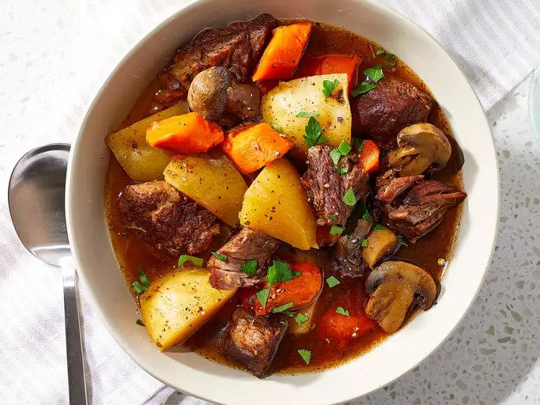

Beef Stew

Instant Pot Best Beef Stew
Ingredients
- 1 tablespoon butter
- 1 pound beef chuck, cut into 1-inch cubes
- 4 Yukon Gold potatoes, cubed
- 1 ½ cups mushrooms, halved
- 1 onion, cut into 6 wedges
- 2 carrots, cut into 1/2-inch thick slices
- 2 cloves garlic, minced
- 3 cups beef broth
- 1 tablespoon Worcestershire sauce
- 1 tablespoon tomato paste
- 1 teaspoon salt
- ½ teaspoon ground black pepper
- ½ teaspoon dried rosemary